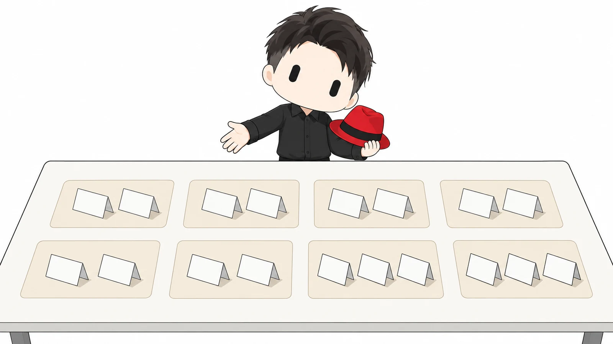
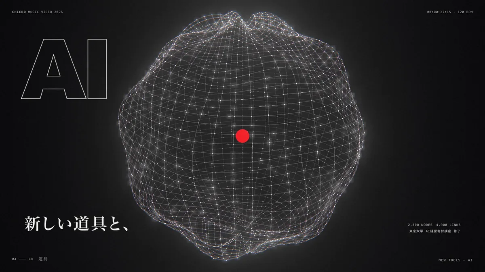
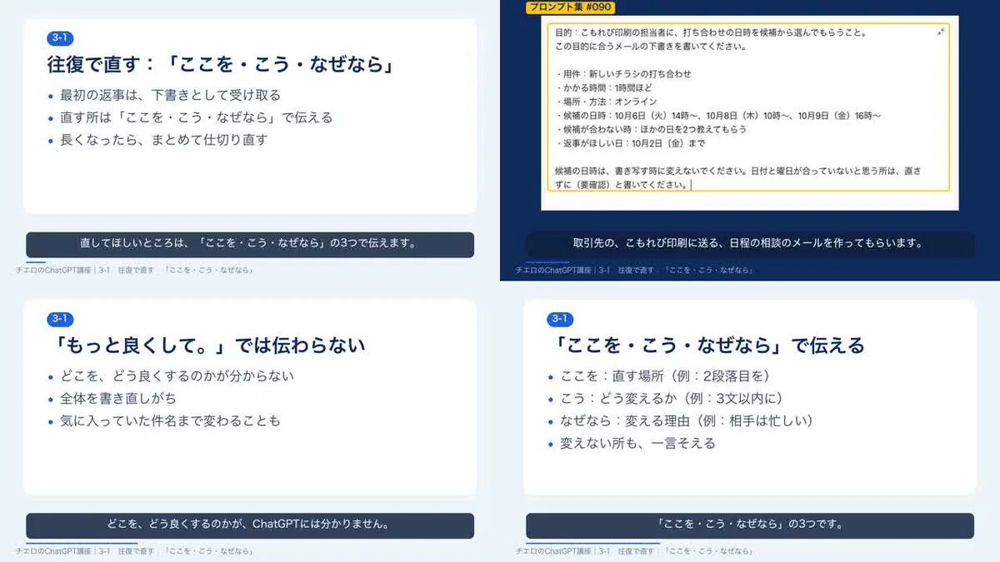
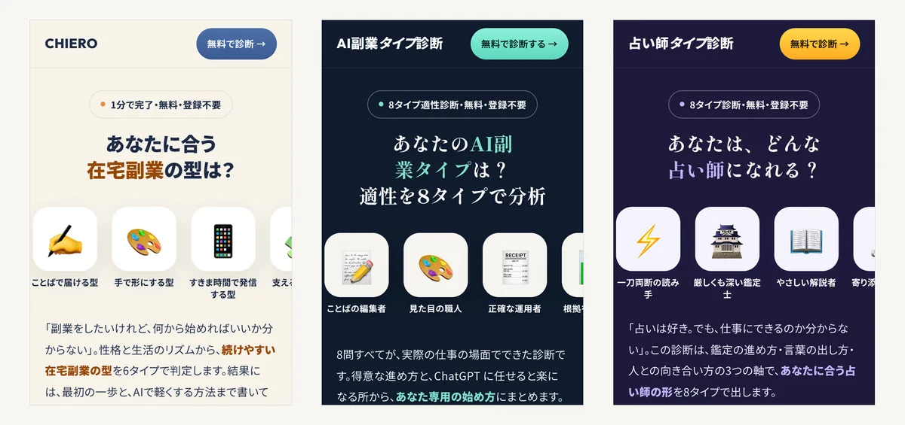

01 / WHAT YOU CAN MAKE
作れる物
画像は、各スキルの元になった CHIERO の制作物です。販売中の物は、価格と購入ページを載せています。

MV スタジオ
会社や商品を調べ、曲を作り、映像を three.js のコードで描いて、30〜60秒の MV に書き出します。
- 価格
- 2,980円（税込）
YouTube 制作一式
台本・声・スライド・字幕・サムネを作り、1本の動画に組み上げます。
- 価格
- 準備中

講座動画の量産
テキスト教材から話し言葉の台本を作り、スライドと合成音声で講座の動画にします。
- 価格
- 準備中

診断LP メーカー
質問・タイプ・結果の文を決めて、1枚の HTML の診断ページに組みます。
- 価格
- 準備中
日本語ナレーション TTS
台本の読み方を指定して合成音声にし、読み間違いを機械で確かめます。
- 価格
- 準備中
PV
曲の拍に合わせて文字と図形が動く、短い紹介映像を作ります。
- 価格
- 準備中
文章の AIっぽさ消し
指す物やする事があいまいな文を見つけ、意味を変えずに書き直します。
- 価格
- 準備中
02 / BEFORE YOU START
始める前に
- 用意する物：Apple Silicon の Mac と、Claude Code か Codex の契約。API の鍵と利用料は、使う方がご自身で用意します。
- AI が作った物は、公開や送信の前に、人が確かめてから出します。